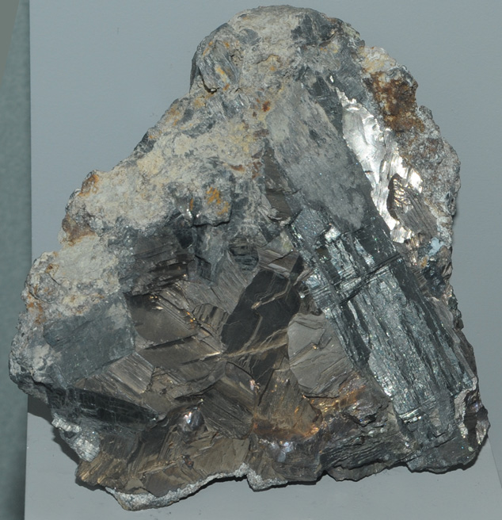

|

| Bi
This sample of bismuth is displayed in the Smithsonian Museum of Natural History. Bismuth is one of the few elements that can be found in pure form as natural minerals. The sample at left is about 18x18 cm and is from Carmen mine, Huayna, Potosi', Bolivia. It is described as bismuth with bismuthinite.
|